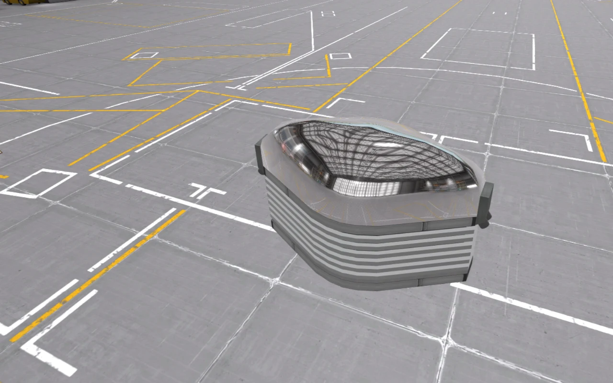
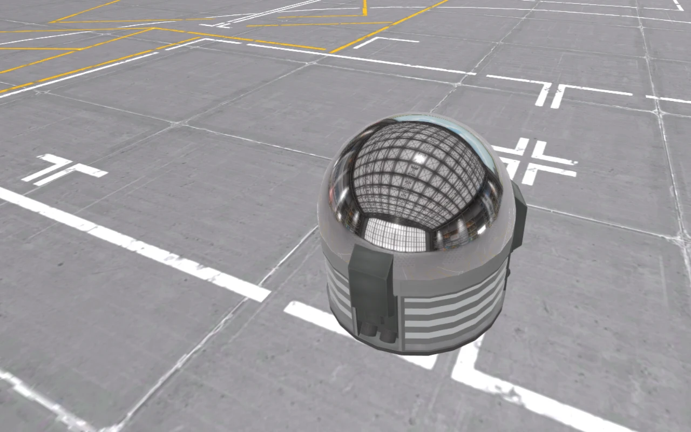
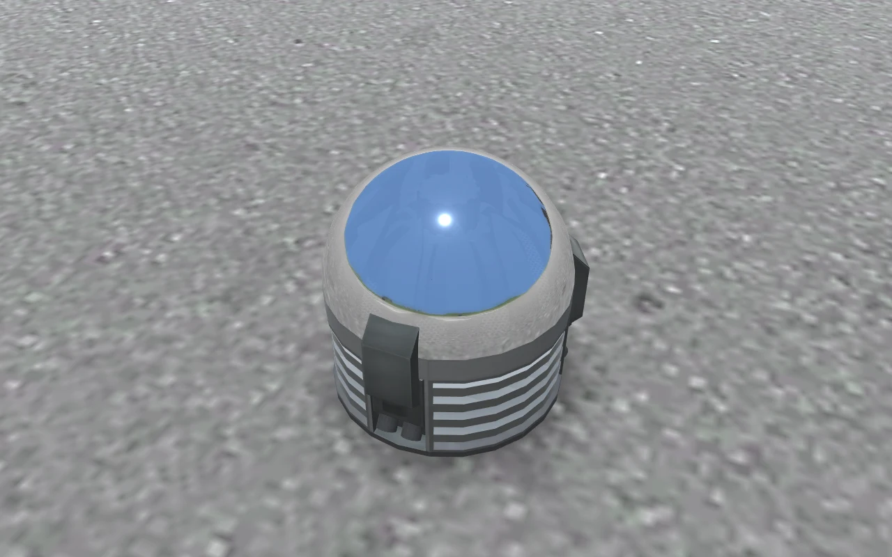
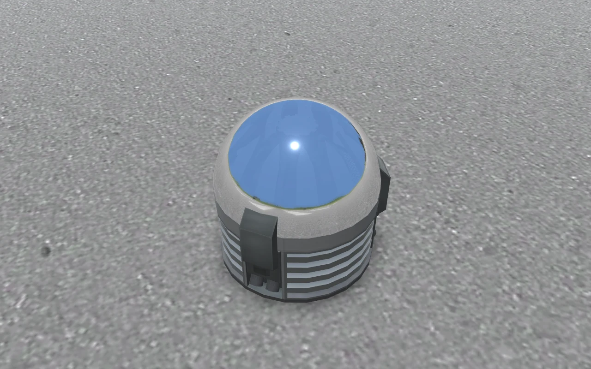
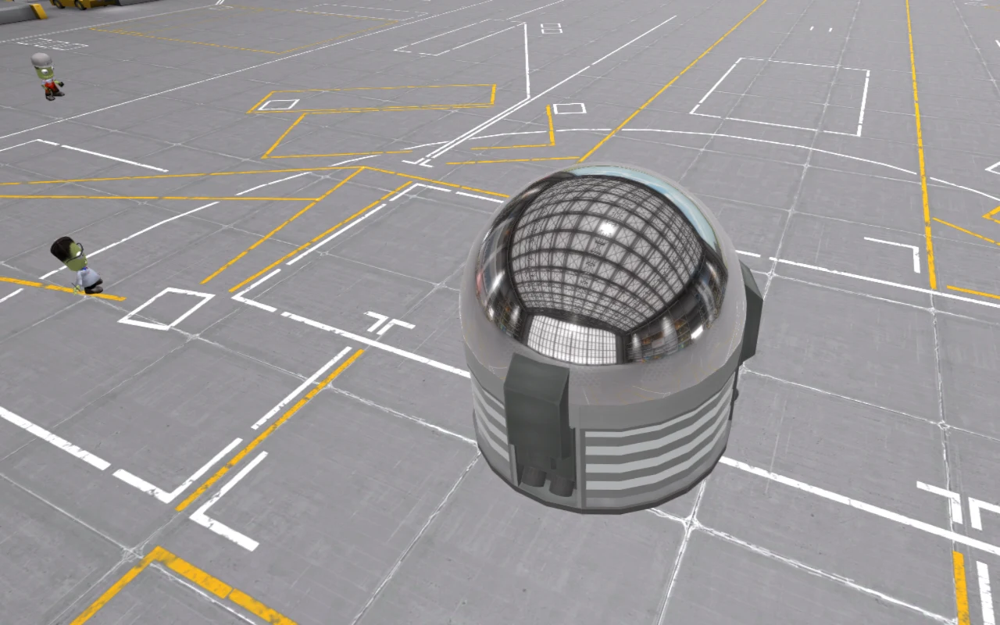
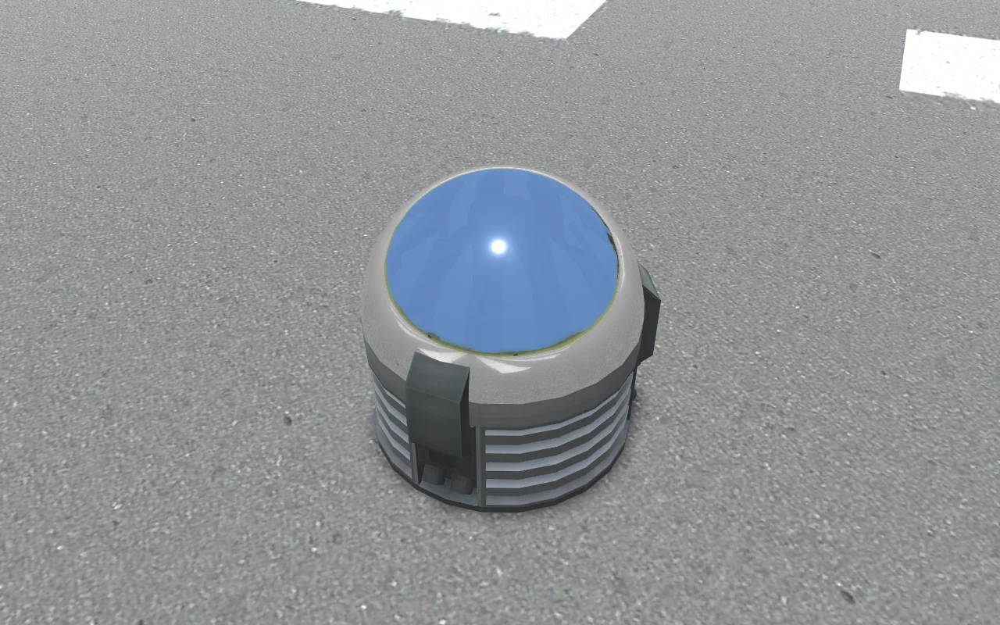

ShineFix home
← Back to supported mods
Blueshift
Optics verified
Human tested
Version v1.19.1
Compatibility evidence
Original screenshot gallery
Parts
Mk2 Bussard Collector

S-0 Bussard Collector


S1 Bussard Collector

S2 Bussard Collector

